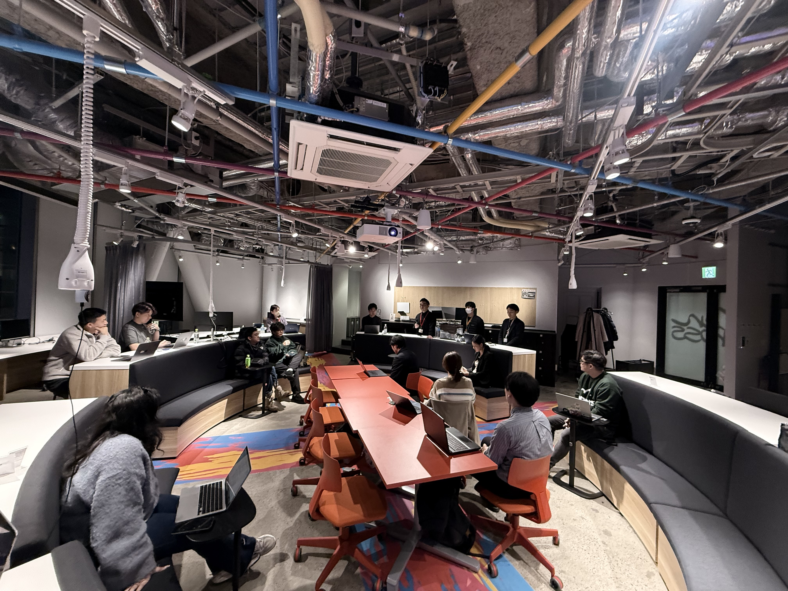
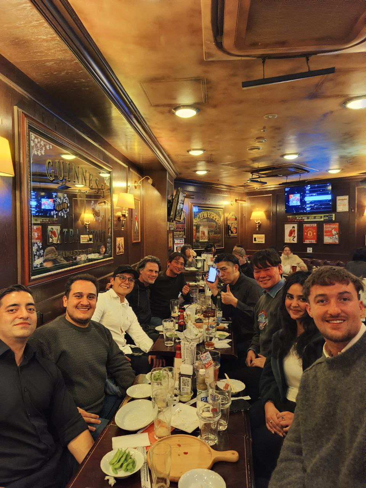
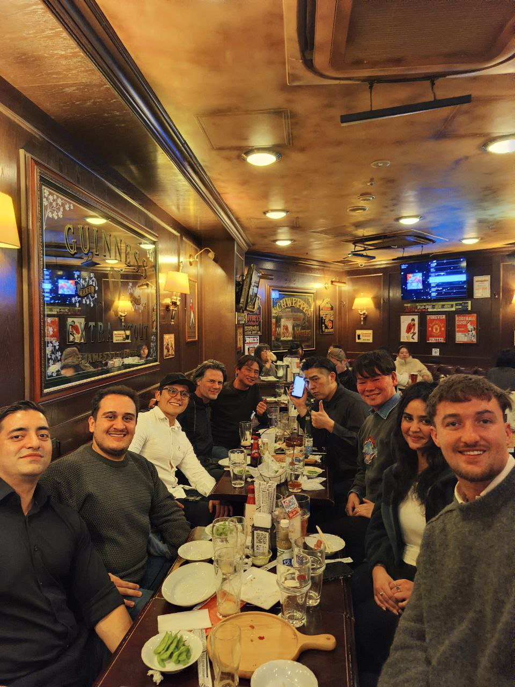

The Space
スペース


Where Startups Ship Product スタートアップがプロダクトを生み出す場所
A purpose-built innovation lab inside Tokyo Dome City's Meets Port building. Open workspace, presentation area, and a view of the Dome itself. This is where the cohort works, meets, and builds every day. 東京ドームシティのミーツポートビル内に設けられた専用イノベーションラボ。オープンワークスペース、プレゼンテーションエリア、そして東京ドームを望む景観。コホートのメンバーが毎日ここで仕事をし、集まり、構築します。
Inside Tokyo Dome City東京ドームシティ内
Direct access to 40M annual visitors for real-world product testing年間4,000万人の来場者へのダイレクトアクセスで実社会テスト
Full Work Environment完全な作業環境
Monitors, fast Wi-Fi, presentation setup, and flexible seatingモニター、高速Wi-Fi、プレゼン設備、フレキシブルな座席
Events & Communityイベント&コミュニティ
Weekly meetups, panels, socials, and demo nights毎週のミートアップ、パネル、交流会、デモナイト



 
